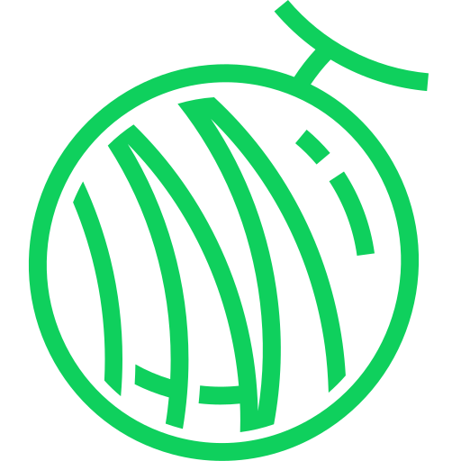
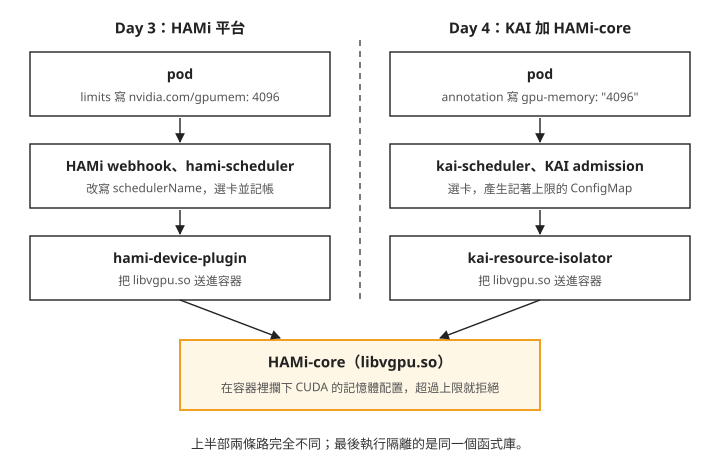
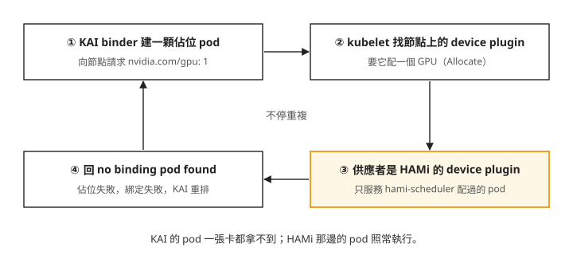

Day 4: 讓 KAI 排程的 pod 也能切 VRAM——HAMi-core 整合與兩套 GPU 方案的衝突¶

Day 3 結尾留下一顆排不上的 pod。團隊已經用 KAI 的佇列管 GPU 配額（Day 1–2），又想照 Day 3 的做法用 HAMi 把一張 T4 切給好幾個小模型，於是很自然地把兩件事寫進同一顆 pod：schedulerName: kai-scheduler，加上 nvidia.com/gpumem: 4096。結果它一直 Pending，KAI 的事件寫著 No node in the default node-pool has nvidia.com/gpumem resources。兩套系統都裝著、都健康，卻沒有一邊接手。原因 Day 3 查過了：HAMi 只改寫走預設排程器的 pod，見 Day 3 的「指定 schedulerName: kai-scheduler 又要 gpumem，pod 永遠 Pending」。
這一章照 HAMi 官方文件提供的整合方式，讓走 KAI 的 pod 也拿得到 VRAM 上限。我們會先在 HAMi 還裝著的叢集上送出整合寫法的 pod，看兩套 GPU 方案同時在場時怎麼互相卡住；接著把 HAMi 整組卸掉、檢查它留下了什麼，再在乾淨的節點上把同一份 YAML 跑通，並確認隔離仍然有效。
讀完之後，遇到一個叢集同時裝了兩套 GPU 方案，你會知道先查「節點上的 nvidia.com/gpu 是誰在宣告」，並從答案判斷它們會不會互相卡住。
官方整合只借走 HAMi 的一個函式庫¶
Day 3 那條路動用了 HAMi 的整組元件：webhook 把 pod 的 schedulerName 改成 hami-scheduler；hami-scheduler 挑一張卡，並記下誰用了多少 VRAM；hami-device-plugin 在容器啟動時，把一個叫 libvgpu.so 的動態函式庫送進容器。真正在執行期攔下 CUDA 的記憶體配置、讓容器裡的 nvidia-smi 只看到 4096 MiB 的，是最後這個函式庫。它在 HAMi 專案裡有自己的名字：HAMi-core。
所以要讓 KAI 排的 pod 也有 VRAM 上限，只要把 HAMi-core 送進容器、再告訴它上限是多少就夠了。HAMi 官方的 KAI 整合文件一開頭就這樣劃界：
The integration uses HAMi-core directly, not the full HAMi platform. KAI Scheduler keeps its own scheduling capability and brings in HAMi-core only for GPU memory isolation.
排程、記帳、配額都留在 KAI 手上，要裝的東西只剩下表三樣。admission 和 binder 是 Day 1 看過的 KAI 元件：前者在 pod 建立時補上欄位，後者在排程決定之後把 pod 綁到節點。這一章要動手的是前兩列：改 KAI admission 的設定，另外安裝 kai-resource-isolator。
| 元件 | 做什麼 | 來自 |
|---|---|---|
| KAI 的 admission | 算出這顆 pod 分到多少 VRAM，產生一個記著上限的 ConfigMap | KAI，要開 global.gpuSharing 與 binder.plugins.hamicore.enabled |
kai-resource-isolator |
DaemonSet 把 libvgpu.so 鋪到每台 GPU 節點；webhook 把它和 /etc/ld.so.preload 掛進 pod |
HAMi 專案的獨立 chart |
HAMi-core libvgpu.so |
執行期攔 CUDA 配置呼叫，強制上限 | 同上 |
下面這張圖把兩條路並排，左邊是 Day 3 走過的，右邊是今天要走的：

我們可以從圖上看到兩件事：
- 右邊那條路上沒有
hami-scheduler、hami-device-plugin，也沒有 HAMi 的 webhook。 - pod 要 VRAM 的寫法也換了：不再寫在
resources.limits，改成 annotationgpu-memory。步驟 3 會實際寫一份。
兩條路的終點是同一個函式庫，隔離效果應該跟 Day 3 一樣，步驟 8 會驗證。
步驟 1：擴增 GPU 節點¶
GPU 節點池用完都會縮到 0（做法見 Day 0），先拉回 2 台，並回頭查節點池的 count 確認真的是 2，不要只看指令有沒有回傳。
Day 1 裝的 KAI 和 Day 3 裝的 HAMi 都還在。HAMi 的 device plugin 是 DaemonSet，新節點加入後自動跑起來，兩台節點就緒後 allocatable（節點可以分給 pod 的資源量，排程器只看這個；另一個欄位 capacity 是節點宣稱自己有多少）會各出現 nvidia.com/gpu: 10，也就是 HAMi 把一張卡報成 10 份。這一章用的版本是 HAMi v2.9.0、KAI v0.16.8，叢集是 Kubernetes 1.35.6。workload 都放在 day4-lab namespace，先建好：
選讀：HAMi 平台的集中與分散擺法¶
這一節跟開場的問題無關，可以跳過。它談 HAMi 平台的另一個設定：同一組 pod 要集中在一張卡上，還是分散到幾台節點。實驗要用到 HAMi 平台，所以放在動 KAI 之前做；每組各跑四顆 pod，做完一組就清理，再做下一組或進步驟 2。
HAMi 的 scheduler extender（掛在預設排程器旁邊、替它挑 GPU 節點的元件）會替每個候選節點算一個「這台已經多滿」的分數。往最高分放是集中，叫 binpack；往最低分放是分散，叫 spread。設定分兩個層級：
| 政策 | 層級 | 效果 | 逐 pod 覆寫 |
|---|---|---|---|
binpack |
Node(挑哪一台節點) | 盡量塞進同一台 GPU 節點 | 可以,用 annotation |
spread |
Node | 盡量分散到不同 GPU 節點 | 可以,用 annotation |
numa-first |
GPU(同一台裡挑哪張卡) | 多卡配置時優先同 NUMA(v2.9.0 尚未實作) | 不行,只能全域設定 |
NUMA 指多 CPU 插槽的伺服器上，記憶體和 PCIe 裝置分屬不同 CPU，同組存取比較快；這一章每台只有一張卡，用不到。chart 預設是 node 層級 binpack，可以改安裝值 scheduler.defaultSchedulerPolicy.nodeSchedulerPolicy，或在 pod 上寫 annotation hami.io/node-scheduler-policy 逐 pod 覆寫。
對照組用預設政策（01-placement-default.yaml）：四顆 pod 各要 nvidia.com/gpu: 1 加 nvidia.com/gpumem: 4096，不寫 annotation。四顆只差編號，用迴圈產生：
for n in 1 2 3 4; do
cat <<EOF
---
apiVersion: v1
kind: Pod
metadata:
name: bp-$n
namespace: day4-lab
labels: { run: placement-default }
spec:
restartPolicy: Never
nodeSelector: { gpu: "on" }
tolerations:
- key: kubernetes.azure.com/scalesetpriority
operator: Equal
value: spot
effect: NoSchedule
containers:
- name: c
image: nvidia/cuda:12.9.2-base-ubuntu24.04
command: ["bash", "-c", "nvidia-smi --query-gpu=memory.total --format=csv,noheader; sleep 3600"]
resources:
limits:
nvidia.com/gpu: 1
nvidia.com/gpumem: 4096
EOF
done > 01-placement-default.yaml
12:23:45 apply -> 12:23:56 all four pods bound (11s)
bp-1..4 Running aks-gpuspot-21249019-vmss00000c SCHED hami-scheduler
hami.io/vgpu-devices-allocated = GPU-7987a0bf-...,NVIDIA,4096,0:;
node ledger vmss00000b nvidia.com/gpu 0
vmss00000c nvidia.com/gpu 4
in-container 4096 MiB (all four)
四顆都在同一張卡上。4 × 4096 = 16384 MiB 正好等於 HAMi 記錄的這張卡總 VRAM（devmem），剛好用滿也排得進去。
先刪除對照組的 pod，再進行實驗組：kubectl -n day4-lab delete pod -l 'run in (placement-default,placement-spread)'。
實驗組（02-placement-spread.yaml）把迴圈裡的 bp-$n 改成 sp-$n、placement-default 改成 placement-spread，並在 metadata 補上 annotation，其餘不動：
metadata:
name: sp-$n
namespace: day4-lab
labels: { run: placement-spread }
annotations:
hami.io/node-scheduler-policy: "spread"
12:24:53 apply -> 12:25:02 bound (9s)
sp-1, sp-3 Running vmss00000b → GPU-845254fb-...
sp-2, sp-4 Running vmss00000c → GPU-7987a0bf-...
node ledger vmss00000b nvidia.com/gpu 2
vmss00000c nvidia.com/gpu 2
兩組並排比較：
| 預設(binpack) | annotation spread |
|
|---|---|---|
| 用到幾張實體卡 | 1 張(bp-1..4 全在 vmss00000c) |
2 張(每台各 2 顆) |
| 該卡 VRAM 佔用 | 16384 / 16384 MiB(100%) | 各 8192 / 16384 MiB(50%) |
| 空節點 | 1 台(可以縮掉) | 0 台 |
| 單台 spot 被回收時受影響的 pod | 4 顆同時中斷 | 2 顆 |
| 綁定耗時 | 11 秒 | 9 秒 |
extender 的日誌可以看到分數怎麼算。同一個 vgpu-scheduler-extender 容器，兩輪的分數如下：
# binpack round, when bp-4 arrives
score.go:185 "NodeFitPod" pod="day4-lab/bp-4" node="vmss00000c" score=10.5
score.go:185 "NodeFitPod" pod="day4-lab/bp-4" node="vmss00000b" score=0
# spread round, when sp-4 arrives
node_policy.go:82 node vmss00000b used 2, usedCore 0, usedMem 8192,
node_policy.go:63 node vmss00000c default score is 3.500000, computer override score is 3.500000
score.go:185 "NodeFitPod" pod="day4-lab/sp-4" node="vmss00000c" score=3.5
score.go:185 "NodeFitPod" pod="day4-lab/sp-4" node="vmss00000b" score=7
binpack 那一輪，bp-4 去了 10.5 分、已經比較滿的 vmss00000c；spread 那一輪，sp-4 去了 3.5 分、比較空的 vmss00000c。annotation 沒有換掉評分方式，只換掉挑選方向，computer override score 那一行就是它生效的紀錄。
binpack 能空出整台節點來縮掉，但 spot 節點被收回時四顆同時中斷；spread 分散影響，代價是兩台都得開著。這個 annotation 由寫 pod 的人自己決定，HAMi 不做限制，要強制得靠 OPA、Kyverno 這類在 pod 建立時檢查並改寫內容的 policy engine。
實驗組結束後，再執行同一條清理指令刪除 pod：kubectl -n day4-lab delete pod -l 'run in (placement-default,placement-spread)'。
步驟 2：裝上整合的兩個元件，並確認設定真的生效¶
官方文件第一步是 helm install kai-scheduler oci://ghcr.io/nvidia/kai-scheduler ...，這個位址抓不到 chart：
$ helm show chart oci://ghcr.io/nvidia/kai-scheduler --version v0.16.8
Error: failed to perform "FetchReference" on source:
GET "https://ghcr.io/v2/nvidia/kai-scheduler/manifests/v0.16.8":
response status code 403: denied: requested access to the resource is denied
能用的是 Day 1 裝 KAI 時用的 ghcr.io/kai-scheduler/kai-scheduler/kai-scheduler，KAI 專案自己的 README 寫的也是這個位址。Day 1 的「--version 0.16.8 抓不到 chart」是版本字串對不上，這次是位址不對；兩種情況都可以先用 helm show chart 試一次再安裝。
KAI 已經裝著，所以用 helm upgrade 疊上整合需要的兩個值：global.gpuSharing: true 打開「多顆 pod 共用一張卡」的功能，binder.plugins.hamicore.enabled: true 打開 binder 的 HAMi-core 外掛。把它們寫成 07-kai-integration-values.yaml：
cat > 07-kai-integration-values.yaml <<'EOF'
global:
gpuSharing: true
binder:
plugins:
hamicore:
enabled: true
EOF
$ helm upgrade kai-scheduler \
oci://ghcr.io/kai-scheduler/kai-scheduler/kai-scheduler --version v0.16.8 \
-n kai-scheduler -f 07-kai-integration-values.yaml --wait --timeout 8m
12:26:03 -> 12:26:43 (40s) STATUS: deployed REVISION: 2
接著確認兩個值真的生效。KAI 是 operator 架構，helm 值會先寫進一個 Config 物件（KAI operator 的設定物件，Day 1 看過），operator 再依它產生各元件。容易查錯的地方是：helm 值寫在 global.gpuSharing，Config 裡卻放在 spec.admission 底下，spec.global 查不到：
spec.global.gpuSharing = None # looking here suggests it never applied
spec.admission.gpuSharing = True # where the value actually lands
spec.binder.plugins = {"hamicore": {"enabled": true}}
比較可靠的做法是跳過 Config，直接看 Deployment 的啟動參數，那是元件真正收到的設定：
admission: ... "--gpu-sharing-enabled=true", "--hami-core-enabled=true",
"--gpu-fraction-runtime-class-name", "nvidia"
binder: ... --plugins {"gpusharing":{"enabled":true,"priority":100,...},
"hamicore":{"enabled":true,"priority":50}, ...}
前兩個參數就是我們要的。admission 的最後一個參數還藏著一件事：它會替每顆共卡的 pod 指定 runtimeClassName: nvidia。RuntimeClass 是 Kubernetes 用來指定「用哪一種容器執行環境啟動這顆 pod」的物件；pod 指名了一個不存在的 RuntimeClass，API server 會直接拒絕建立。這個 RuntimeClass 通常由 NVIDIA 的 GPU Operator 或原廠 device plugin 建立，在 AKS 上跑 kubectl get runtimeclass，只會列出 runc 和 kata-vm-isolation，沒有 nvidia。所以再 upgrade 一次，把這個值清空：
$ helm upgrade kai-scheduler \
oci://ghcr.io/kai-scheduler/kai-scheduler/kai-scheduler --version v0.16.8 \
-n kai-scheduler -f 07-kai-integration-values.yaml \
--set admission.gpuFractionRuntimeClassName="" --wait --timeout 8m
完成後再看一次 admission 的參數，應該變成 "--gpu-fraction-runtime-class-name", ""。清空就好，AKS GPU 節點預設的容器執行環境本來就用得到 GPU，Day 3 整天沒有指定過 runtimeClassName。佔位 pod 的 RuntimeClass 則由 binder.resourceReservation.runtimeClassName 設定，v0.16.8 的 values.yaml 沒有替它設預設值，這裡不需要修改。
第二個元件是裝在節點端的 isolator：
$ helm install kai-resource-isolator \
oci://docker.io/projecthami/kai-resource-isolator \
--namespace kai-resource-isolator --create-namespace --version 1.0.0-chart
12:27:25 -> 12:27:41 (16s)
kai-resource-isolator-libsync-plrf6 1/1 Running ← DaemonSet,desired 3
kai-resource-isolator-libsync-qqmvz 1/1 Running
kai-resource-isolator-libsync-wfq6t 1/1 Running
kai-resource-isolator-webhook-... 1/1 Running
注意 desired 3：叢集只有兩台 GPU 節點，但這個 DaemonSet 沒有 nodeSelector，tolerations 又是 Exists/NoSchedule，所以連沒有卡的 system 節點也跑了一份。節點一多，就要自己補 nodeSelector，否則每台機器都會多一個沒有用途的常駐 pod。
裝完之後，叢集裡會在 pod 建立時改寫它的 mutating webhook 有三個，第一個是 Day 3 看過的 HAMi webhook：
| webhook | failurePolicy | 排除條件 |
|---|---|---|
vgpu.hami.io |
Ignore | namespace 或 pod 帶 hami.io/webhook: ignore |
vgpu.lib.kai-resource-isolator.io |
Ignore | namespace 或 pod 帶 kai-resource-isolator.io/webhook: ignore |
admission.kai-scheduler.svc |
Fail | namespace 為 kube-system 或 kai-scheduler |
failurePolicy 決定 webhook 本身掛掉時怎麼辦：Ignore 的掛掉，pod 照樣建得出來但不再被改寫，隔離會悄悄消失；Fail 的掛掉，除了排除的 namespace，其他地方都建不出 pod。最後一欄的排除條件步驟 3 會用到。
步驟 3：照官方文件送出共卡的 pod¶
官方文件的 pod 寫法跟 Day 3 有幾處不同：
| HAMi 平台路徑（Day 3） | KAI 加 HAMi-core 路徑（今天） | |
|---|---|---|
| 排程器 | hami-scheduler（webhook 自動改寫） |
kai-scheduler（自己寫 schedulerName） |
| VRAM 怎麼要 | resources.limits["nvidia.com/gpumem"]: 4096 |
metadata.annotations["gpu-memory"]: "4096" |
| 佇列 | 無 | labels["kai.scheduler/queue"]: default-queue |
| 隔離執行者 | HAMi-core | HAMi-core |
gpu-memory 的單位是 MiB，不帶字尾；pod 的 resources 不寫任何 GPU 資源。03-kai-hami-integrated.yaml 照文件寫，兩顆共卡的 pod 只差編號：
for n in 1 2; do
cat <<EOF
---
apiVersion: v1
kind: Pod
metadata:
name: kai-shared-$n
namespace: day4-lab
labels:
kai.scheduler/queue: default-queue
run: kai-integrated
annotations:
gpu-memory: "4096" # unit is MiB, no suffix
spec:
schedulerName: kai-scheduler
restartPolicy: Never
nodeSelector: { gpu: "on" }
tolerations:
- key: kubernetes.azure.com/scalesetpriority
operator: Equal
value: spot
effect: NoSchedule
containers:
- name: c
image: nvidia/cuda:12.9.2-base-ubuntu24.04
command: ["bash", "-c", "nvidia-smi; sleep 3600"]
EOF
done > 03-kai-hami-integrated.yaml
如果漏了步驟 2 清空 RuntimeClass 那一步，kubectl apply 會直接被拒，物件在 API server 就被擋下，kubectl get pods 什麼都查不到：
$ kubectl apply -f 03-kai-hami-integrated.yaml
Error from server (Forbidden): error when creating "03-kai-hami-integrated.yaml":
pods "kai-shared-1" is forbidden: pod rejected: RuntimeClass "nvidia" not found
建得出來之後，pod 卻一直 Pending：
12:34:34 apply -> 12:41:43 still Pending (7m)
Events:
Warning Unschedulable 2m8s (x300 over 7m8s) kai-scheduler
no nodes with enough resources were found:
3 node(s) didn't have enough resources: GPU memory.
3 node(s) didn't have enough resources: GPUs.
proportion.go:256 Total allocatable resources are
<CPU: 7.511 (cores), memory: 50.122 (GB), Gpus: 20>, number of nodes: <3>
這兩段訊息互相矛盾：排程器日誌說看得到 Gpus: 20（兩台節點，HAMi 各報 10 份），事件卻說 GPU memory 不夠。問題不在請求量，而是 KAI 不知道一張卡有多少 VRAM：KAI 從節點標籤 nvidia.com/gpu.memory 讀取每張卡的 VRAM（單位 MiB）。這個標籤平常由 GPU Feature Discovery（GFD，NVIDIA 用來把 GPU 型號、VRAM 等規格寫成節點標籤的元件）打上，這座叢集沒有 GFD，HAMi 的 device plugin 也不打這個標籤。標籤不存在時，KAI 就把一張卡當成 100 MiB，任何 gpu-memory 請求都放不下。替兩台 GPU 節點手動補上：kubectl label node <gpu-nodes> nvidia.com/gpu.memory=16384 nvidia.com/gpu.count=1 --overwrite。這樣打的標籤節點重建就會消失，要長期保留得寫到 node pool 層級，見疑難排解：KAI 把一張卡當成 100 MiB。
補上標籤後，排程立刻過了，但綁定失敗：
Events:
Normal Scheduled kai-scheduler Successfully assigned day4-lab/kai-shared-1 to vmss00000b
Warning BindingError binder Failed to bind pod day4-lab/kai-shared-1 to node ...:
failed to reserve GPUs for pod <day4-lab/kai-shared-1> in gpu group <9e3ffaf1-...>:
admission webhook "vgpu.hami.io" denied the request: pod has node assigned
failed to reserve GPUs 這句帶出整合路徑上的另一個角色：佔位 pod（reservation pod）。共卡的 pod 自己不請求 GPU 資源，KAI 的 binder 會另外在 kai-resource-reservation namespace 建一顆佔位 pod（名稱以 gpu-reservation- 開頭），由它向節點請求 nvidia.com/gpu: 1，把整張卡佔下來，再讓共卡的 pod 分著用。被拒的就是這顆佔位 pod：binder 建它時已經指定好節點，而 HAMi 的 webhook 拒絕已經指定節點的 pod。
照步驟 2 那張表的排除條件，把佔位 pod 所在的 namespace 標成 HAMi webhook 不處理：
佔位 pod 這次建得出來，卻在節點上被拒：
gpu-reservation-c6186a984b5142b0 0/1 UnexpectedAdmissionError vmss00000b
Message: Pod was rejected: Allocate failed due to rpc error: code = Unknown desc =
no binding pod found on node aks-gpuspot-21249019-vmss00000b, which is unexpected
這句錯誤是 HAMi 的 device plugin 回的。KAI 的佔位 pod 為什麼會找上它？下一步單獨看這件事。
步驟 4：兩套方案同時在場時，誰擋了誰¶
兩套方案同時裝著，會不會把同一張卡分配兩次？05-coexistence-probe.yaml 把兩顆 pod 用 nodeSelector: kubernetes.io/hostname 釘在同一台節點上（每台只有一張卡，所以必然同卡）：coex-kai 走 KAI 整合路徑（gpu-memory annotation），coex-hami 走 HAMi 平台路徑（nvidia.com/gpumem 資源）。兩顆都申請 4096 MiB，並在程式裡實際佔住 3 GiB。<node-a> 換成自己叢集裡任一台 GPU 節點的 hostname（kubectl get nodes 查得到），兩顆一定要寫同一台：
cat > 05-coexistence-probe.yaml <<'EOF'
apiVersion: v1
kind: Pod
metadata:
name: coex-kai
namespace: day4-lab
labels:
kai.scheduler/queue: default-queue
run: coexistence
annotations:
gpu-memory: "4096"
spec:
schedulerName: kai-scheduler
restartPolicy: Never
nodeSelector:
kubernetes.io/hostname: <node-a>
tolerations:
- key: kubernetes.azure.com/scalesetpriority
operator: Equal
value: spot
effect: NoSchedule
containers:
- name: c
image: pytorch/pytorch:2.5.1-cuda12.4-cudnn9-runtime
command:
- python
- -c
- |
import torch, time
print("visible total MiB:", torch.cuda.get_device_properties(0).total_memory // 1024 // 1024, flush=True)
x = torch.empty(3 * 1024 * 1024 * 1024, dtype=torch.uint8, device="cuda")
print("held 3 GiB", flush=True)
while True:
time.sleep(30)
---
apiVersion: v1
kind: Pod
metadata:
name: coex-hami
namespace: day4-lab
labels:
run: coexistence
spec:
restartPolicy: Never
nodeSelector:
kubernetes.io/hostname: <node-a>
tolerations:
- key: kubernetes.azure.com/scalesetpriority
operator: Equal
value: spot
effect: NoSchedule
containers:
- name: c
image: pytorch/pytorch:2.5.1-cuda12.4-cudnn9-runtime
command:
- python
- -c
- |
import torch, time
print("visible total MiB:", torch.cuda.get_device_properties(0).total_memory // 1024 // 1024, flush=True)
x = torch.empty(3 * 1024 * 1024 * 1024, dtype=torch.uint8, device="cuda")
print("held 3 GiB", flush=True)
while True:
time.sleep(30)
resources:
limits:
nvidia.com/gpu: 1
nvidia.com/gpumem: 4096
EOF
12:43:43 apply
coex-hami Running aks-gpuspot-21249019-vmss00000b SCHED hami-scheduler
coex-kai Pending <none> SCHED kai-scheduler
coex-hami 一下就跑起來，annotation 也完整（hami.io/bind-phase: success、hami.io/vgpu-devices-allocated: GPU-845254fb-...,NVIDIA,4096,0:;）。coex-kai 的事件則不斷重複 Scheduled → BindingError → Scheduled，kai-resource-reservation 裡的佔位 pod 每一輪都以 UnexpectedAdmissionError 收場。
要看懂這個迴圈，得先回到節點上的 nvidia.com/gpu 是誰給的。這個資源由 device plugin 向 kubelet 宣告，而同一個資源名在一台節點上只能有一個 device plugin 供應。Day 3 已經把原廠的 NVIDIA device plugin 換成 HAMi 的，所以現在任何 pod 請求 nvidia.com/gpu，kubelet 都會去找 HAMi 的 device plugin 要卡，KAI 的佔位 pod 也不例外。把這個過程畫成一圈，照著圖上的編號看：

關鍵在第 ③ 步。HAMi 的 device plugin 收到配卡要求時，會去找 hami-scheduler 留下的待綁定紀錄（hami.io/vgpu-devices-to-allocate），KAI 的佔位 pod 沒有這筆紀錄，於是被拒。KAI 收到綁定失敗就重排，又回到第 ① 步。
所以回到開頭的問題：同一張卡不會被分配兩次。只要 HAMi 還是 nvidia.com/gpu 的唯一供應者，coex-hami 就正常執行，KAI 那顆一個裝置都拿不到。壞掉的樣子是 KAI 排不上，一送 pod 就看得到，不會變成兩邊都以為自己拿到同一塊 VRAM。
另外，步驟 3 的排程器日誌說叢集有 Gpus: 20：實體只有 2 張 T4，KAI 照單全收 HAMi 報的 allocatable（deviceSplitCount: 10）。假如沒有上面那道限制，KAI 會拿「20 張卡」去算佇列配額與 fair-share（各佇列依 quota 和權重該分到的量，Day 1 看過），而兩邊的數字各自看起來都正常。
這就是開場說的判斷方法：兩套 GPU 方案能不能同時裝，先查節點上的 nvidia.com/gpu 是誰在宣告。看節點上跑的是哪一個 device plugin 的 DaemonSet，再看 allocatable 的數字：HAMi 預設把一張卡報成 10（deviceSplitCount 的預設值），原廠 plugin 預設報 1（開了 time-slicing 會報得更多）。答案是 HAMi，KAI 的整合就動不了；要走 KAI 路徑，就得把 HAMi 平台拆掉，換回原廠的 device plugin。完整的症狀與修法見疑難排解：兩套方案同時裝著，KAI 的 pod 無限重排。
步驟 5：拆掉 HAMi 之前，各抓一次 metrics¶
拆之前順便看一下兩套系統各自的 metrics 能回答什麼問題。兩邊各 port-forward 一次就讀得到，不必裝監控系統。先看 HAMi：
$ kubectl -n kube-system port-forward deploy/hami-scheduler 19993:9395
$ curl -s http://127.0.0.1:19993/metrics | grep -v '^#'
hami_gpu_memory_limit_bytes{device_uuid="GPU-845254fb-...",node="vmss00000b"} 1.7179869184e+10
hami_gpu_memory_allocated_bytes{device_uuid="GPU-845254fb-...",node="vmss00000b"} 4.294967296e+09
hami_gpu_memory_allocated_bytes{device_uuid="GPU-7987a0bf-...",node="vmss00000c"} 0
hami_node_gpu_memory_allocated_ratio{device_uuid="GPU-845254fb-...",node="vmss00000b"} 0.25
hami_resource_quota_used{namespace="day4-lab",quota_name="nvidia.com/gpumem"} 20480
hami_resource_quota_used{namespace="hami-lab",quota_name="nvidia.com/gpumem"} 16096
Day 3 留了一個問題：nvidia.com/gpumem 不是節點資源，kubectl 查不到 VRAM 還剩多少。答案在這裡，hami_gpu_memory_limit_bytes 減掉 hami_gpu_memory_allocated_bytes，就是這張卡剩下的 VRAM；ratio = 0.25 也正好對上 coex-hami 的 4096/16384。最後兩行按 namespace 加總的 hami_resource_quota_used 則不要拿來用：hami-lab 是 Day 3 結束時就刪掉的 namespace，day4-lab 實際也只有 coex-hami 一顆持有 4096 MiB，數字卻還掛著。這組數字記在 scheduler extender 的記憶體裡，namespace 層級的累計值沒有隨著 pod 和 namespace 刪除而扣回去。看用量請以按裝置計算的那幾行為準。
KAI 那邊：
$ kubectl -n kai-scheduler port-forward deploy/kai-scheduler-default 18080:8080
$ curl -s http://127.0.0.1:18080/metrics | grep -v '^#'
kai_e2e_scheduling_latency_milliseconds 1
kai_action_scheduling_latency_milliseconds{action="allocate"} 0
kai_plugin_scheduling_latency_milliseconds{plugin="gpupack",...} 0
kai_queue_fair_share_gpu{queue_name="default-queue"} 0.78
kai_queue_gpu_usage{queue_name="default-queue"} 0
KAI 給的是佇列與排程行為：佇列該分到多少（fair_share_gpu）、實際用了多少（gpu_usage，此時是 0，因為 KAI 的 pod 全卡在步驟 4 那一圈裡）、每個排程動作花多久。想知道哪張卡快滿了看 HAMi，想知道哪個佇列等不到卡看 KAI。Day 5 會把 HAMi 這些數字接到網頁介面上。
步驟 6：卸載 HAMi 平台，檢查留下了什麼¶
步驟 4 的結論是：不把 HAMi 平台拆掉，KAI 路徑就跑不起來。卸載時要特別留意三樣 helm 管不到的東西：webhook 憑證 secret、HAMi 寫在節點物件上的 annotation，以及節點的 capacity，因為下一套 GPU 方案會讀到後兩者，拿到過期的卡規格。拆之前可以用 helm get manifest hami -n kube-system 看 release 管得到哪些物件：Deployment、DaemonSet、Service、ConfigMap、ServiceAccount、mutating webhook 和一組 RBAC，共 19 個，沒有 CRD。HAMi 的帳記在 scheduler extender 的記憶體與 pod annotation 裡，所以用量只能從 metrics 讀。
secret/hami-scheduler-tls（webhook 的憑證）不在 manifest 裡，它是安裝時由 helm hook job 另外產生的，卸載時最容易留下來。
第一件要確認的是新 pod 還會不會被改寫。送一顆走 default-scheduler、資源欄寫著 HAMi 資源的 pod：
cat > 06-post-uninstall-probe.yaml <<'EOF'
apiVersion: v1
kind: Pod
metadata:
name: post-uninstall-probe
namespace: day4-lab
spec:
restartPolicy: Never
nodeSelector: { gpu: "on" }
tolerations:
- key: kubernetes.azure.com/scalesetpriority
operator: Equal
value: spot
effect: NoSchedule
containers:
- name: c
image: nvidia/cuda:12.9.2-base-ubuntu24.04
command: ["bash", "-c", "nvidia-smi; sleep 600"]
resources:
limits:
nvidia.com/gpu: 1
nvidia.com/gpumem: 4096
EOF
pod 的 schedulerName 維持 default-scheduler，沒有被改寫；沒有任何 hami.io/* annotation，沒有 CUDA_DEVICE_MEMORY_LIMIT 環境變數，volumeMounts 只剩 serviceaccount。事件是：
Warning FailedScheduling default-scheduler
0/3 nodes are available: 1 node(s) didn't match Pod's node affinity/selector,
2 Insufficient nvidia.com/gpu, 2 Insufficient nvidia.com/gpumem.
少了 HAMi 的 extender，default-scheduler 把 nvidia.com/gpumem 當成一般的擴充資源，沒有任何節點能滿足。
第二件要確認的是殘留：
| 類別 | 卸載後狀態 |
|---|---|
MutatingWebhookConfiguration hami-webhook |
已刪 |
ClusterRole/ClusterRoleBinding(含 system:kube-scheduler 那兩條) |
已刪 |
| Deployment/DaemonSet/Service/ConfigMap/ServiceAccount | 已刪 |
| CRD | 本來就沒有 |
secret/hami-scheduler-tls(kube-system) |
殘留 |
節點 annotation hami.io/node-handshake |
殘留 |
節點 annotation hami.io/node-nvidia-register |
殘留(整串卡規格) |
節點 capacity: nvidia.com/gpu: 10 |
殘留(allocatable 已歸 0) |
helm 建的物件都刪乾淨了，留下來的是不屬於 Helm release 的資源：hook 產生的 secret、device plugin 寫在節點物件上的 annotation，以及 kubelet 還沒更新的 capacity（Day 3 的「helm uninstall 之後，capacity 還寫著有卡」是同一件事）。secret 與 annotation 會在步驟 9 清掉；capacity 會在步驟 7 裝回原廠 plugin 後更新，原因見疑難排解：卸載 HAMi 之後，節點上還留著它的資料。
步驟 7：裝回原廠 device plugin，把同一份 YAML 重跑一次¶
卸載後節點上沒有任何 device plugin，allocatable 是 0。照步驟 4 的結論，把原廠的 nvidia-device-plugin 裝回來，安裝值只加 spot toleration 與 gpu=on nodeSelector：
cat > 08-nvdp-values.yaml <<'EOF'
tolerations:
- key: kubernetes.azure.com/scalesetpriority
operator: Equal
value: spot
effect: NoSchedule
nodeSelector:
gpu: "on"
EOF
安裝方式跟 Day 0 相同，只是改用這份 values 檔，版本固定在 0.19.3：
$ helm repo add nvdp https://nvidia.github.io/k8s-device-plugin
$ helm upgrade -i nvdp nvdp/nvidia-device-plugin --version 0.19.3 \
-n nvidia-device-plugin --create-namespace -f 08-nvdp-values.yaml
等兩台節點的 DaemonSet pod 都 Running，再看節點的 capacity 與 allocatable：
12:50:12 helm upgrade -i nvdp nvdp/nvidia-device-plugin --version 0.19.3
12:50:39 both DaemonSet pods Running
12:50:56 vmss00000b / vmss00000c capacity {'nvidia.com/gpu': '1'} allocatable {'nvidia.com/gpu': '1'}
現在宣告 nvidia.com/gpu 的是原廠 plugin，一張實體卡報 1，不再是 HAMi 的 10。重送一字未改的 03-kai-hami-integrated.yaml：
12:51:16 apply -> 12:51:30 both Running (14s)
kai-shared-1 / kai-shared-2 Running vmss00000b SCHED kai-scheduler
gpu-reservation-65ccb3d920befca0 Running vmss00000b (kai-resource-reservation namespace)
兩顆共卡的 pod 和佔位 pod 都跑起來了，開場那個「指名 KAI 又要 VRAM」的需求排得上了。解法不是讓 HAMi 接手 KAI 的 pod（兩套都裝著時，HAMi 反而擋住了佔位 pod），而是把 VRAM 請求搬到 annotation，並把 HAMi 平台換掉、只留 HAMi-core。
容器裡看到的是切出來的一份：
$ kubectl -n day4-lab logs kai-shared-1
[HAMI-core Msg(43:...:libvgpu.c:870)]: Initializing.....
| 0 Tesla T4 Off | 00000001:00:00.0 Off | Off |
| N/A 37C P8 13W / 70W | 0MiB / 4259MiB | 0% Default |
總量是 4259MiB，為什麼不是 4096 留到步驟 8。第一行的 [HAMI-core Msg ... libvgpu.c] 跟 Day 3 一模一樣，是同一個函式庫，只是這次由 kai-resource-isolator 送進來。兩顆 pod 的 NVIDIA_VISIBLE_DEVICES 也指向同一顆 GPU UUID，確認它們共用同一張實體卡。
這張表要看出的是：共卡的 pod spec 是 resources: {}，完全沒有請求 GPU 資源；請求整張卡的是佔位 pod，限制 VRAM 的是 HAMi-core，中間由 KAI 和 isolator 把設定接起來。表中的 PodGroup 是 Day 1 看過的 KAI 排程單位；libsync 是 isolator 的 DaemonSet，負責把函式庫複製到每台節點；hostPath 是把節點上的目錄掛進容器，subPath 是只掛其中一個檔案。
| 步驟 | 誰做 | 做了什麼(現場證據) |
|---|---|---|
| 1 | KAI scheduler | 決定放哪台、跟誰共卡;建 PodGroup |
| 2 | KAI binder | 在 kai-resource-reservation 建佔位 pod,那顆才是真正請求 nvidia.com/gpu: 1 的 |
| 3 | KAI admission | 產生 ConfigMap,pod 上蓋 annotation runai/shared-gpu-configmap、label runai-gpu-group |
| 4 | isolator webhook | 掛上 hostPath /usr/local/vgpu 與 subPath: ld.so.preload 兩個 volumeMount |
| 5 | isolator libsync | 把 libvgpu.so 鋪到節點的 /usr/local/vgpu |
| 6 | HAMi-core libvgpu.so |
執行期攔 CUDA 配置,強制上限 |
| — | HAMi 平台 | 完全沒有參與(已卸載) |
第 3 列的 ConfigMap 記著 KAI 算出來的上限，可以跟容器內的三個地方對照：
$ kubectl -n day4-lab get cm kai-shared-1-...-shared-gpu-0 -o jsonpath='{.data}'
{"CUDA_DEVICE_MEMORY_LIMIT":"4259m","GPU_PORTION":"0.26",
"NVIDIA_VISIBLE_DEVICES":"GPU-845254fb-...","RUNAI_NUM_OF_GPUS":"0.26"}
$ env | grep -E "CUDA_DEVICE|GPU_PORTION"
CUDA_DEVICE_MEMORY_LIMIT=4259m
GPU_PORTION=0.26
$ cat /etc/ld.so.preload
/usr/local/vgpu/libvgpu.so
$ ls -la /usr/local/vgpu
-rw-r--r-- 1 root root 27 ld.so.preload
-rw-r--r-- 1 root root 684856 libvgpu.so
-rwxr-xr-x 1 root root 684264 libvgpu.so.v2.9.0
ConfigMap 裡的上限就是容器的 CUDA_DEVICE_MEMORY_LIMIT；/etc/ld.so.preload 讓每個程式啟動時先載入 libvgpu.so，HAMi-core 靠這個掛進來。Day 3 的 HAMi 平台路徑要 exec 進容器才查得到上限，KAI 路徑用 kubectl get cm 就讀得到。
步驟 8：驗證隔離，並看 VRAM 怎麼換算成 GPU 比例¶
04-kai-overalloc.yaml 帶同樣的 gpu-memory: "4096"，程式以 512 MiB 為單位一路加到 8192：
cat > 04-kai-overalloc.yaml <<'EOF'
apiVersion: v1
kind: Pod
metadata:
name: kai-hog
namespace: day4-lab
labels:
kai.scheduler/queue: default-queue
run: kai-integrated
annotations:
gpu-memory: "4096"
spec:
schedulerName: kai-scheduler
restartPolicy: Never
nodeSelector: { gpu: "on" }
tolerations:
- key: kubernetes.azure.com/scalesetpriority
operator: Equal
value: spot
effect: NoSchedule
containers:
- name: c
image: pytorch/pytorch:2.5.1-cuda12.4-cudnn9-runtime
command:
- python
- -c
- |
import torch, time
print("visible total MiB:", torch.cuda.get_device_properties(0).total_memory // 1024 // 1024, flush=True)
blocks = []
got = 0
for i in range(16):
try:
blocks.append(torch.empty(512 * 1024 * 1024, dtype=torch.uint8, device="cuda"))
got += 512
print(f"OK +512MiB total={got}MiB", flush=True)
except Exception as e:
print(f"FAIL at total={got + 512}MiB -> {type(e).__name__}: {e}", flush=True)
break
time.sleep(0.5)
print("final held MiB:", got, flush=True)
time.sleep(600)
EOF
12:52:32 apply -> 12:52:43 finished
visible total MiB: 4259
OK +512MiB total=512MiB
...
OK +512MiB total=4096MiB
[HAMI-core ERROR (pid:1 thread=... allocator.c:52)]: Device 0 OOM 4938792960 / 4465885184
FAIL at total=4608MiB -> OutOfMemoryError: CUDA out of memory. Tried to allocate 512.00 MiB.
GPU 0 has a total capacity of 4.16 GiB of which 61.00 MiB is free.
final held MiB: 4096
程式拿到 4096 MiB 之後，下一個 512 MiB 就被拒絕。錯誤訊息裡的分母 4465885184 bytes 正好是 4259 MiB，也就是 CUDA_DEVICE_MEMORY_LIMIT；allocator.c:52 跟 Day 3 那顆超額 pod 的錯誤一字不差，因為執行隔離的是同一份 HAMi-core 程式碼，換掉的只有把它送進容器的元件。同一張卡上的 kai-shared-1、kai-shared-2 全程 Running、RESTARTS 0，沒有受到影響。
那 4259 是怎麼來的？KAI 內部不用 MiB 記帳，而是把一張卡當成 1，每顆共卡的 pod 分到一個兩位小數的比例，叫 GPU fraction。步驟 7 的 ConfigMap 裡 GPU_PORTION: 0.26 就是它。照 KAI v0.16.8 的原始碼，排程器讀節點標籤 nvidia.com/gpu.memory（16384）時，會先無條件捨去到 100 的倍數，當成 16300；4096 / 16300 約 0.2513，再以 0.01 為單位無條件進位，得到 0.26。binder 算上限時則拿標籤原值 16384 乘 0.26，得到 4259.84，取整數就是 4259m。
按每顆 0.26 計算，三顆合計 0.78，四顆合計 1.04，超過單卡容量 1，因此一張卡最多放三顆。HAMi 平台以 MiB 記帳，四顆 4096 MiB 正好填滿 16384 MiB（前面選讀那一節的對照組就是這樣擺的）。規劃方式見疑難排解：每張卡少放一個 pod。
步驟 9：把叢集還原成整合前¶
刪 workload、拆兩個 chart，KAI 用 --reset-values 把今天疊上去的值整組丟掉；今天臨時加在節點與 namespace 上的標籤要拆，步驟 6 那三項殘留也一起清掉：
$ kubectl -n day4-lab delete pod --all --grace-period=5
$ helm uninstall kai-resource-isolator -n kai-resource-isolator
$ helm uninstall nvdp -n nvidia-device-plugin
$ helm upgrade kai-scheduler \
oci://ghcr.io/kai-scheduler/kai-scheduler/kai-scheduler --version v0.16.8 \
-n kai-scheduler --reset-values --wait --timeout 8m
$ kubectl label node <gpu-nodes> nvidia.com/gpu.memory- nvidia.com/gpu.count-
$ kubectl label namespace kai-resource-reservation hami.io/webhook-
$ kubectl delete namespace day4-lab
$ kubectl -n kube-system delete secret hami-scheduler-tls
$ kubectl delete ns kai-resource-isolator nvidia-device-plugin
$ kubectl annotate node <gpu-nodes> hami.io/node-handshake- hami.io/node-nvidia-register-
kai-resource-isolator 和 nvidia-device-plugin 這兩個 namespace 要自己刪，因為 helm uninstall 不會刪掉當初用 --create-namespace 建的 namespace。還原後的 KAI：
12:54:30 REVISION: 4 STATUS: deployed USER-SUPPLIED VALUES: null
Config CR: admission.gpuSharing = False
admission.gpuFractionRuntimeClassName = nvidia # chart default is back
binder.plugins = null
gpuFractionRuntimeClassName 回到 nvidia，表示這是 chart 的預設值。之後在這座叢集再打開 KAI 的 GPU sharing，步驟 2 清空 RuntimeClass 那一步要再做一次。最後照 Day 0 把 GPU pool 縮回 0，並回頭查 count 確實是 0。
疑難排解¶
KAI 不知道卡有多大，當成 100 MiB，gpu-memory 的 pod 永遠 Pending¶
步驟 3 已經補上節點標籤的話，可以跳過這一項。
症狀：gpu-memory: "4096" 的 pod 一直 Pending，事件寫 didn't have enough resources: GPU memory，同一個排程器的日誌卻報告 Gpus: 20，卡明明在。把請求改小到 2000、1000 也一樣。
原因：KAI 從節點標籤 nvidia.com/gpu.memory 取得每張卡有多少 MiB，標籤不存在就用預設值：
DefaultGpuMemory = 100 // The default value is 100 because it allows all the calculation of
// (memory = fractional * GpuMemory) to work, if it was 0 the result will always be zero too
GpuMemoryLabel = "nvidia.com/gpu.memory"
這個標籤平常由 GFD 打上；HAMi 的 device plugin 不打，它把卡的規格寫在 annotation hami.io/node-nvidia-register 裡，KAI 讀不到。
修法：kubectl label node <gpu-nodes> nvidia.com/gpu.memory=16384 nvidia.com/gpu.count=1 --overwrite。要在節點重建後還留著，得寫到 node pool 層級（az aks nodepool update --labels）。這個預設值不會回傳錯誤，只會讓請求永遠放不下；遇到「卡看得到、VRAM 卻不夠」這種訊息，先查 KAI 讀的那個標籤在不在、值對不對，不要反覆調整請求量。
兩套方案同時裝著，KAI 的 pod 無限重排¶
症狀：HAMi 平台和 KAI 整合都裝好、都健康，gpu-memory annotation 的 pod 在 Scheduled 與 BindingError 之間不斷重複；kai-resource-reservation 裡的佔位 pod 一直是 UnexpectedAdmissionError。錯誤字串 no binding pod found on node <X>, which is unexpected 看不出是兩個專案之間的衝突。
原因：節點上的 nvidia.com/gpu 只能有一個 device plugin 供應。HAMi 平台裝著時供應者是 HAMi，它只服務 hami-scheduler 處理過的 pod，KAI 的佔位 pod 因此被拒（過程見步驟 3、4）。
修法：兩者擇一。要走 KAI 路徑，節點上必須是原廠的 nvidia-device-plugin（或 GPU Operator），HAMi 平台整組卸掉，只留 kai-resource-isolator 送進去的 libvgpu.so，做法見步驟 6、7。
卸載 HAMi 之後，節點上還留著它的資料¶
步驟 9 的收尾指令已經包含這裡的修法。
症狀：helm uninstall hami 之後 release、webhook、pod 都不見了，但節點的 hami.io/node-nvidia-register annotation 原封不動（整串 UUID、devmem 16384、mode hami-core），capacity.nvidia.com/gpu 還是 10，只有 allocatable 變成 0。下一套 GPU 方案接手時，讀 capacity 或節點 annotation 的工具會拿到錯的資料。
原因：annotation 是 device plugin 寫在節點物件上的，不屬於 Helm release；device plugin 重新註冊並回報裝置後，kubelet 就能更新節點資源，不必等節點重啟。步驟 7 裝回原廠 plugin 後，原來兩台節點的 capacity 與 allocatable 都已變成 1，符合 Kubernetes 的 device plugin 註冊機制。
修法：
$ kubectl -n kube-system delete secret hami-scheduler-tls
$ kubectl annotate node <gpu-nodes> \
hami.io/node-handshake- hami.io/node-nvidia-register-
檢查卸載乾不乾淨，不能只看 helm list 和 namespace，要分四類各查一次：cluster 層級的物件（webhook、RBAC、CRD）、其他 namespace 裡的殘留、寫在節點物件上的 label 與 annotation，以及 --create-namespace 建出來、現在已經空掉的 namespace。
gpu-memory 換算成 GPU 比例後進位，每張卡少放一個 pod¶
症狀：要 4096 MiB，容器裡 nvidia-smi 顯示 4259 MiB，多了 163 MiB。每顆換算後的 GPU fraction 是 0.26，四份合計 1.04，超過單卡容量 1。
原因：KAI 把 gpu-memory 換算成兩位小數的 GPU fraction，換算方式見步驟 8：4096 MiB 變成 0.26，1 / 0.26 約 3.8，一張卡只放得下三顆。官方文件也警告過這件事，舉的例子是 15360 MiB 的卡上要 4096，會變成 0.27 與 4147m，跟同一套算法對得上。
修法：規劃容量時從比例往回推，不要從 MiB 出發：先決定一張卡要切幾份，再確認每份換算後的比例乘上份數不超過 1。這一章只實測了 4096 MiB 變成 0.26、一張卡放三顆；照上面的算法推，16384 MiB 的卡要放四顆，每顆最多寫 4075（16300 × 0.25），這個數字沒有實測過。KAI 另有 gpu-fraction annotation 可以直接寫比例，例如 gpu-fraction: "0.25"，但這門課沒有測過，用之前請自己驗證。節點標籤 nvidia.com/gpu.memory 的值就是換算的基準（見疑難排解：KAI 把一張卡當成 100 MiB），標錯了整個叢集的配額都會算錯，要跟 nvidia-smi 顯示的總量一致。
想一想¶
- 一個叢集已經裝了 GPU Operator，有同事想在同一批 GPU 節點上再裝 HAMi 平台試切卡。裝之前你會先查哪一件事？
- KAI 的共卡 pod 事件寫著
didn't have enough resources: GPU memory，排程器日誌卻顯示看得到卡。你會先去看節點的哪個地方？ - 一張卡的
nvidia.com/gpu.memory標籤是 24576，想讓 KAI 平均分給 3 顆 pod。如果每顆都寫gpu-memory: "8192"，照步驟 8 的換算方式，一張卡放得下幾顆？
小結¶
HAMi 官方的 KAI 整合只借用 HAMi-core：選卡、記帳、配額交給 KAI，pod 用 gpu-memory annotation 要 VRAM，向節點請求 nvidia.com/gpu 的是 KAI 另建的佔位 pod。節點上的 nvidia.com/gpu 只能由一個 device plugin 供應，所以它不能跟 HAMi 平台同時存在。之後遇到叢集裡同時有兩套 GPU 方案，先查這個資源是誰宣告的；KAI 路徑上的 pod 排不上時，再查節點有沒有 nvidia.com/gpu.memory 標籤，以及 VRAM 換算成 GPU 比例後有沒有因為進位而放不下。卸載 HAMi 時，也記得 helm 只收得走它自己建的物件。
延伸閱讀¶
想再深入，可以從這幾份開始：
- HAMi 官方的 KAI Scheduler 整合指南 ——(HAMi 文件站僅 next 版本收錄此頁,對應版本路徑不存在,截至 2026-08)本章整合路徑的依據,包含
gpu-memoryannotation 的寫法與 fraction 換算的警告,以及那句劃界的 "not the full HAMi platform"。 - HAMi 排程政策文件 ——
binpack/spread的 node 與 GPU 兩個層級、預設值,以及「只有 node 層級能逐 pod 覆寫」的規定。 - KAI Scheduler GPU Sharing 說明(v0.16.8) ——
gpu-fraction與gpu-memory兩種要法、佔位 pod 機制、nvidiaRuntimeClass 預設值的出處,對應步驟 2 的 RuntimeClass 設定。 - KAI Scheduler 節點資訊原始碼(v0.16.8) ——
DefaultGpuMemory = 100與GpuMemoryLabel的定義處,也就是 KAI 把卡當成 100 MiB 的原因。
下一步¶
到今天為止，宣告一張 GPU 的寫法看過三種：整張卡的 nvidia.com/gpu: 1、HAMi 的 nvidia.com/gpumem: 4096、KAI 的 gpu-memory annotation。三種寫法有同一個限制：device plugin 只能把裝置報成一個整數計數的擴充資源，凡是「多少 VRAM」「哪一張」「要不要同 NUMA」這類條件，都只能另外塞進資源名、annotation 或節點標籤裡。今天遇到的兩個主要問題都出在這裡：KAI 換算 VRAM 要靠一個節點標籤，而整數資源在一台節點上只能有一個供應者。
往下一層之前，Day 5 先處理一個更直接的問題：HAMi 的用量散在 annotation、節點物件與 metrics 三處，連「現在哪張卡快滿了」都要下三道指令，所以先替它接上一個看得見的介面。取代這整套做法的 Dynamic Resource Allocation，Day 6 用模擬裝置學概念，Day 7 回到這座叢集用真卡驗證。Day 5
HAMi 標誌為 CNCF artwork 之官方資產,此處作社群教學用途。